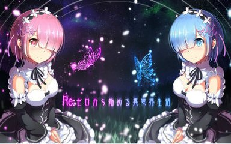
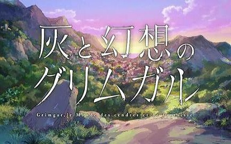
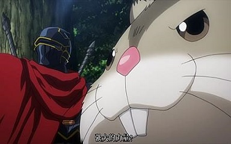

电视动画改编自柳内巧的同名轻小说，故事描绘了20XX年，突如其来的“通往异世界的门”在东京银座出现，从中涌出了大量怪物和军队。担任第三侦察队指挥的二等陆卫·宅男伊丹耀司，帮助被巨大炎龙袭击的村民们时，与精灵、魔导师和亚神等异世界的住民之间产生了奇妙的交流……
人道主义in异世界;热兵器nue冷兵器
下载地址 在线观看
在异世界陷入迷茫的普通高中生菜月昴，邂逅了一位银发的美少女。但想助她一臂之力的昴，却一次次地遭遇敌袭，背叛、暴力，甚至是死亡……“死亡重置”——无力的少年拥有的唯一能力，能将死后时间倒转回一开始。使用了这般力量，便会失去过去的回忆，可为了守护最重要的人们，昴必须抗争到底。“即使你忘却了我，我也不会遗忘你。”
下载地址 在线观看
我们为什么要这么做……？ 哈尔希洛回过神来，才发现自己身处在黑暗当中，他完全不知道自己人在何处，也不明白这个地方是哪里。 他的身边有一群和他一样失去记忆，只记得自己名字的男女；而离开了地底后，等待着众人的是一个「宛如游戏」的世界。 为求生存，哈尔希洛与自己有着相同境遇的伙伴们组成队伍、学习技能，以 没有人知道未来会遇见什么……这一切，就是从灰烬之中所诞生的冒险谭
下载地址 在线观看尼特族又闭门不出，但是在网络上甚至被当作都市传说口耳相传的天才玩家兄妹·空和白。将世界称为“垃圾游戏”的这两个人某一天被自称“神”的少年召唤到了异世界。那里是被神明禁止了战争，“一切交由游戏来决定”的世界——没错，就连国境线也是一样。 被其他种族逼入绝境，只剩下最后一座都市的‘人类种

作品主要讲述了某天，一款曾经掀起过大热潮的VRMMORPG「YGGDRASIL」停止了运营。游戏原本会停止一切服务，但过了结束时间后，玩家们却发现不能退出，NPC也产生了各自的思想。现实世界中喜爱电玩的主人公铃木悟（真名）在等待系统强制登出时，与“安兹·乌尔·恭”公会的成员一起意外穿越到了异世界，并且变成了拥有骷髅外表的最强魔法师——“飞鼠”。就这样，真正的奇幻传说正式拉开了帷幕。
下载地址 在线观看